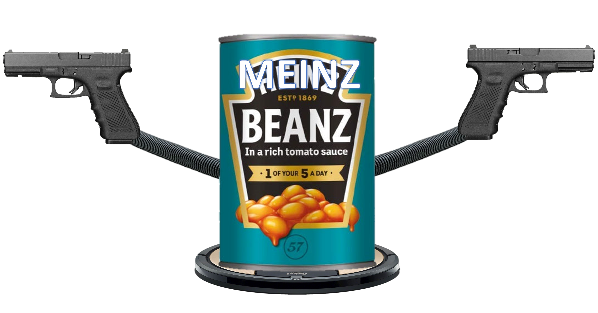
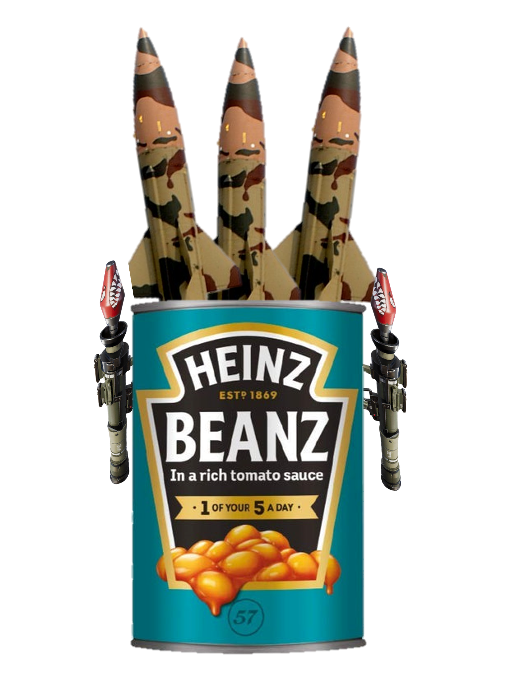

| Unit | Unit Name | Description | Stats | Abileties |
|---|---|---|---|---|
|  | The Home Protection Device | No thief has ever robbed a house it guards. The thiefs like it so much they litterly die. | Hp: 100. Def: 20. Attack: 50 Speed: 5 | Bean Blast: Shoots bean bullets at the enemy. .Hover: Hovers above the ground. |
| The Bean Mimic | Camoflages to easely catch its pray. usually gets killed due to bad reaction time. | Hp: 80. Def: 5. Attack: 100 Speed: 2 | Cutter: decapitates the target. .Chomp: Bites target. .Desguise: Hide as a regular can of beans. | |
| Sensei Bean | Master of stealth. Kanda suprising we found this one after the escape attempt. | Hp: 105. Def: 30. Attack: 40 Speed: 8 | Slash: Cuts the target. .Steath 100: Uses smoke bombs to sneak around (+10 attack, speed and stealth during abilety) | |
| Drone Bean | Dictators best friend. | Hp: 50. Def: 5. Attack: 80 Speed: 10 | Dash: Rams the target (50% chanse to cut target defence in half). Watcher: Locks on to the enemy(Negates all Sealth tactics) Rotors: Unit flies. |  | Artillery Bean | What cant be solved with missiles just needs more missiles used. | Hp: 50. Def: 50. Attack: 50 Speed: 3 | Rocket Launcher: Shoots a rocket at target. Missile: Fires one of its 3 Missiles at the target. |  |
Boxxer Bean | Sucks at dodging so it blocks instead. | Hp: 100. Def: 50. Attack: 70 Speed: 6 | Punch: Punches target. Combo: Does multible punches and can constantly hit the enemy. Block: Blocks most attacks. |  |
Final Boss: Bean Titan | The greatest bean construction. Will not hesitate to look at some nice birds. | Hp: 5000. Def: 50. Attack: 70 Speed: 3 | Stomp: Stomps and creates a shockwave around itself. Bean Blast: Shoots a Bean Bomb out of an arm that explodes on impact. Bean Beam: Shoots a beam of beans out of an arm (or bolth). |

This door leads to the Deeper Bean Lab